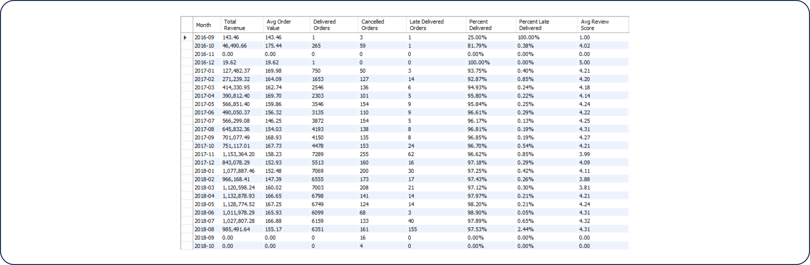
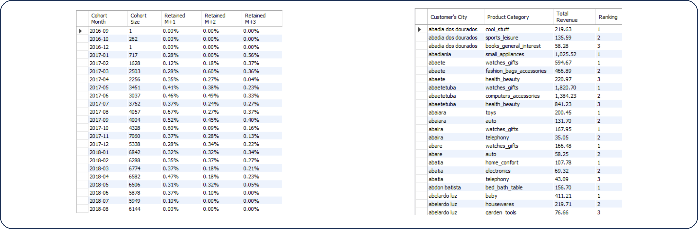

Examines sales performance, customer behavior, and delivery
metrics within Brazil’s e-commerce market.
Overview
This MySQL-based analytics project transforms a raw Brazilian e-commerce dataset into a structured, multi-layered intelligence system — delivering monthly KPI reporting, customer cohort retention analysis, geographic revenue ranking, and automated anomaly detection through a suite of purpose-built SQL views. Each view was engineered to answer a distinct business question, from tracking delivery performance over time to flagging statistically abnormal revenue spikes or dips. The project demonstrates advanced SQL architecture skills by producing clean, BI-ready outputs that can be directly consumed by dashboarding tools without additional transformation.

Business Question
E-commerce operations generate enormous volumes of transactional data, but raw tables alone cannot answer the questions that drive business decisions: Are monthly revenues trending up or down? Are new customers coming back after their first purchase? Which cities and product categories generate the most revenue — and for which customer segments? Are there unusual spikes or drops in revenue that require immediate attention? Without structured, pre-aggregated SQL views, answering these questions requires time-consuming, error-prone ad hoc queries. This project solves that problem by building a reusable, modular analytics layer directly in the database.
Key Insights & Features
- Monthly KPI Tracking (v_monthly_kpis) 
-
Core operational metrics aggregated by month — Total Revenue, Average Order Value, Delivered Orders, Cancelled Orders, Late Delivered Orders, % Delivered, % Late Delivered, and Average Review Score — revealing consistent delivery rates above 96% in peak months and a strong correlation between late deliveries and review score drops.

- Cohort Retention Analysis (v_cohort_retention)
-
A cohort table tracking customer retention at M+1, M+2, and M+3 months after first purchase — surfacing that repeat purchase rates remain below 1% across all cohorts, signaling a critical opportunity for loyalty and re-engagement strategy improvements.
- Top-3 Revenue Ranking by Segment (v_topn_per_segment)
-
SQL functions (RANK/DENSE_RANK) applied across customer city and product category combinations to identify the highest-grossing product categories per geographic market — enabling hyper-local inventory and marketing prioritization without manual filtering.
- Revenue Anomaly Detection (v_anomaly_flags)
-
A rolling 7-day moving average paired with Z-score calculations flags each day as NORMAL, SPIKE, or DIP — creating an automated early-warning system for revenue irregularities that would otherwise require manual monitoring or separate BI tooling.
- BI-Ready Export View (v_export_for_bi)
-
A clean, fully joined stakeholder table combining order details, product categories, pricing, freight values, order status, review scores, customer location, and seller location — structured for direct import into Power BI, Tableau, or Excel without additional transformation steps.
- Analytical Approach
-
Descriptive (monthly KPI trends), diagnostic (cohort drop-off and delivery performance analysis), and detection-based (statistical anomaly flagging via rolling Z-scores) — all implemented purely in SQL using CTEs, window functions, subqueries, and aggregate logic.
| Tool | Usage |
|---|---|
| MySQL | Primary analytics environment |
| SQL functions | rank, moving averages and anomaly detection |
| CTEs & Subqueries | Modular query architecture for cohort and KPI calculations |
| Aggregate Functions | SUM, AVG, COUNT for revenue, review metrics, etc. |
| SQL views | Reusable, modular analytics layer for BI consumption |
Impact & Value
This project demonstrates a skill that most analysts overlook: the ability to build analytics infrastructure, not just run queries. By delivering five purpose-built SQL views, the project creates a reusable analytics layer that any BI tool can connect to directly — eliminating the need to re-write logic for every stakeholder request. The anomaly detection view alone provides a production-ready alerting foundation, while the cohort retention view gives leadership the data needed to justify investment in customer loyalty programs. For any role involving data engineering, analytics engineering, or advanced SQL, this project makes a strong case that you can architect data solutions from the ground up — not just retrieve them.
Let's Work Together!
I help businesses turn raw data into actionable insights, dashboards, and data-driven strategies.
- Data Analysis & Visualization
- Power BI & Dashboard Development
- Business Intelligence Solutions
Phone
+63 956-175-9646Address
Bacolod City, Negros OccidentalPhilippines